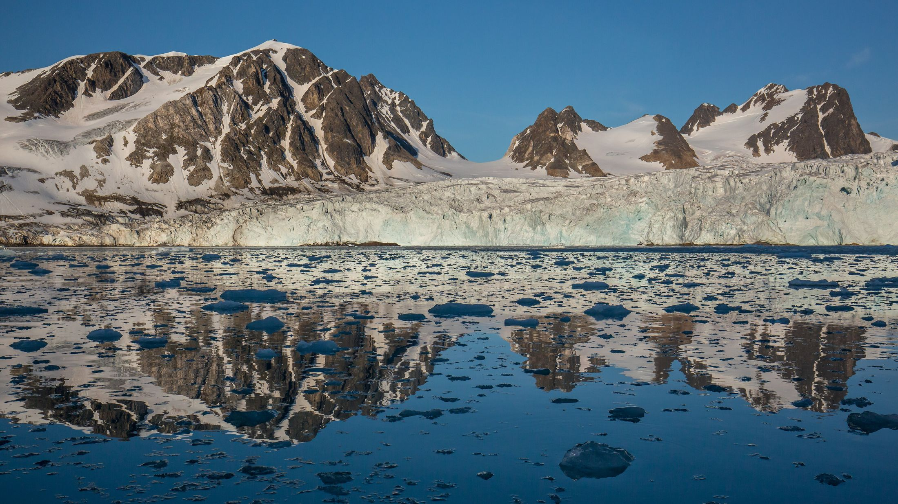
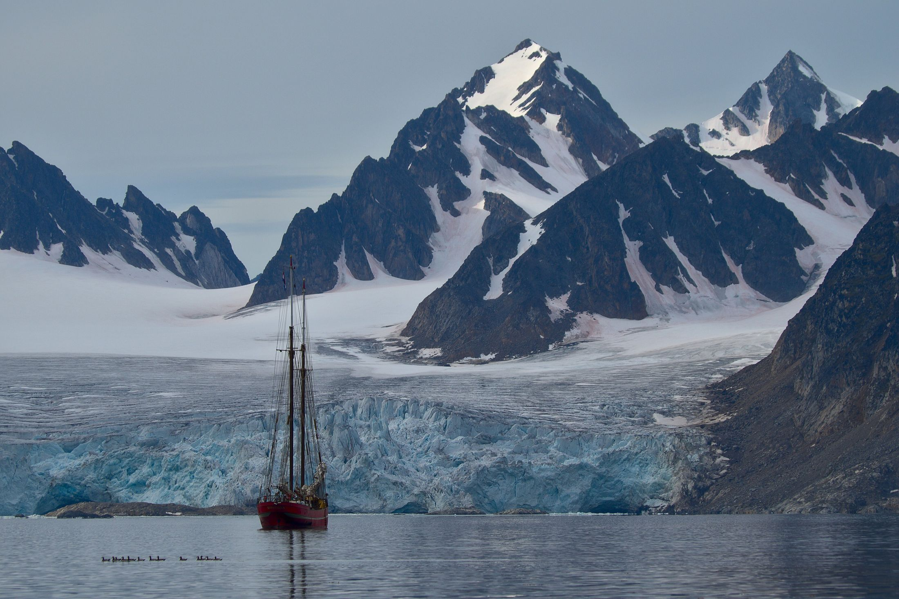
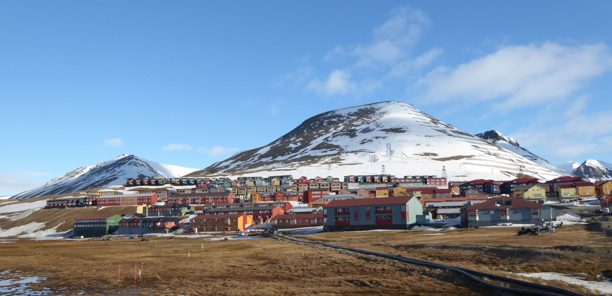
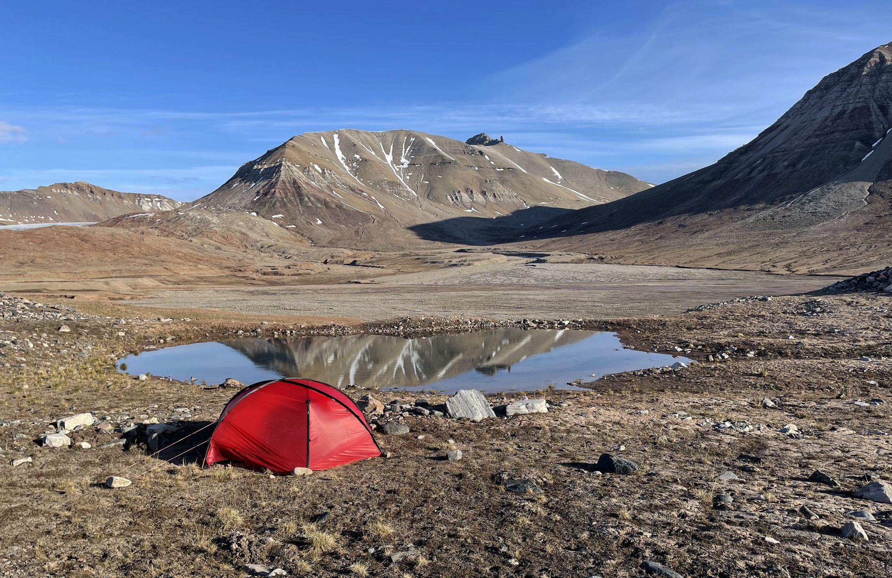
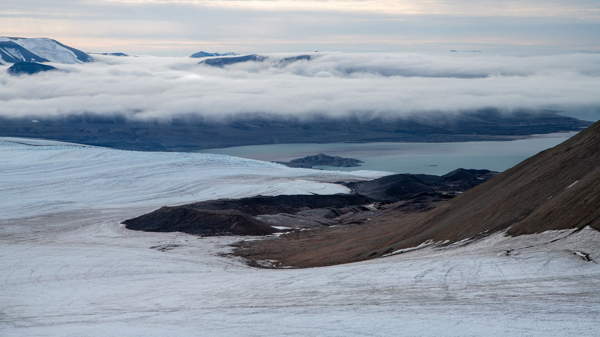

Des Alpes à l'Arctique
Neuf étudiants du Collège du Sud en route vers le Svalbard, pour observer de leurs propres yeux un Arctique qui change.
Le projet
Nous sommes neuf étudiantes et étudiants du Collège du Sud, à Bulle, âgés de 16 à 18 ans. À l'été 2027, nous partirons deux semaines au Svalbard pour ramener bien plus que des souvenirs : des connaissances à partager.
Encadrés par une climatologue, une experte arctique et des guides certifiés, nous marcherons, bivouaquerons et documenterons ce que nous observerons : glaciers, faune, végétation, pollution.
Ce projet, nous le construisons nous-mêmes depuis octobre 2025 : réunions, ventes, randonnées d'entraînement, recherche de soutiens.
Il ne manque plus que vous.
Explorer
Embarquez
avec nous
Le trajet, l'archipel, l'équipe et comment nous aider : tout est à portée de clic.

De Bulle à 78° N
Train, avions, bateau : suivez notre trajet sur le globe, puis nos cinq thèmes d'étude.
→
Au bout du monde
Glaciers, ours polaires, soleil de minuit, villes fantômes : l'archipel en faits étonnants.
→
Neuf élèves
Les élèves, leurs thèmes, et les spécialistes qui nous accompagnent.
→
Objectif 40'000
Don, partenariat, livre : chaque contribution nous rapproche du départ.
→Ils nous soutiennent
« C'est exceptionnel que des adolescents, soutenus par leurs parents, mettent en commun leur passion pour la nature et s'organisent pour aller visiter le Grand Nord et y étudier de façon scientifique les différents thèmes qu'une telle démarche fait émerger. »
« Je suis impressionné par l'énergie et l'enthousiasme des jeunes du Collège du Sud. Leur curiosité et leur engagement sont une source d'inspiration : ces jeunes nous montrent la voie. »
« L'Arctique mobilise souvent le meilleur de nous-même. C'est une école de Vie unique et inspirante pour des personnes attentives aux événements climatiques et environnementaux. »